The lectures before this one followed one organelle at a time: protein sorting, the ER, the Golgi, endosomes and lysosomes, protein turnover, mitochondria. Today we put the organelles side by side and ask how they work together.
After this lecture you can:
describe the nucleus and its envelope, including the nuclear lamina; peroxisomes; and lipid droplets;
explain what an organelle contact site is, and how organelles share lipids, Ca²⁺ and signals there;
explain homeostasis in each compartment as a set point kept by feedback: pH, Ca²⁺, energy and protein load;
compare all organelles in one table: membranes, DNA, how proteins get in, main job, pH and Ca²⁺;
explain two diseases of organelles that are not the usual suspects: progeria (lamin A) and Zellweger syndrome (no peroxisomes).
ELO 5 (organelles and homeostasis), with disease examples for ELO 9.
The question: ten chemistries in one small bag
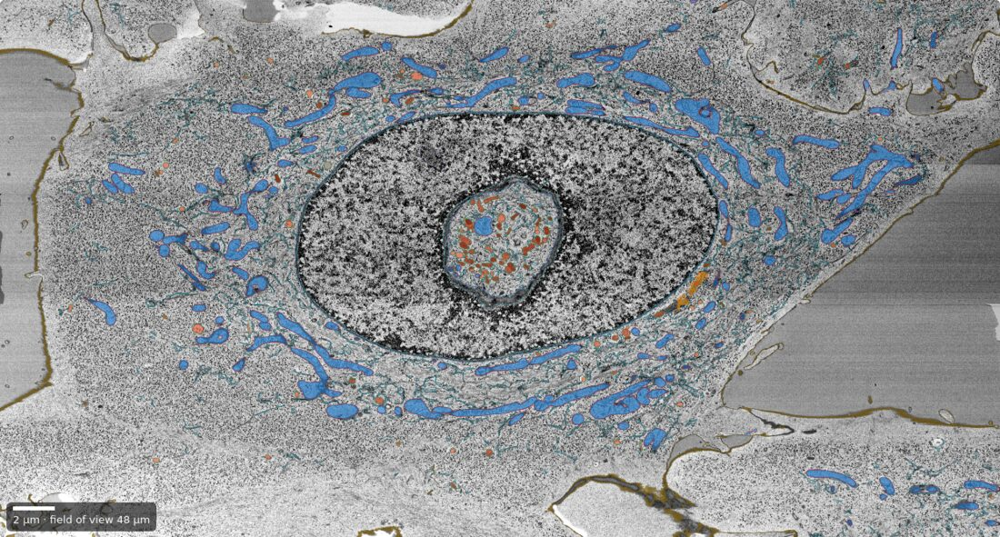
One slice through a HeLa cell (electron microscopy, 48 µm wide), coloured by pH: blue = mitochondria, about pH 8; orange to red = endosomes and lysosomes, pH 6.5 to 4.5; uncoloured = about pH 7.2.
A lysosome at pH 4.5 has 500 times more H⁺ than the cytosol next to it. The ER holds 5000 times more free Ca²⁺ than the cytosol.
These differences are kept for the whole life of the cell, while organelles grow, divide and exchange material all the time. How?
The nucleus: a double membrane and a lamina
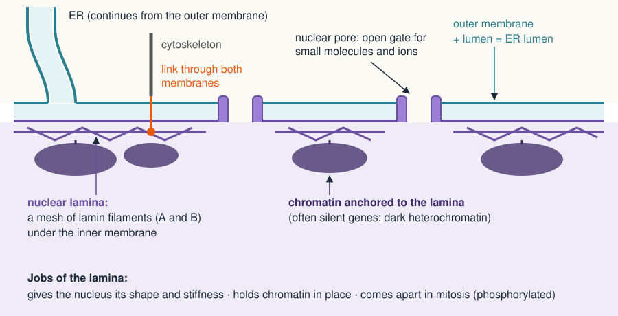
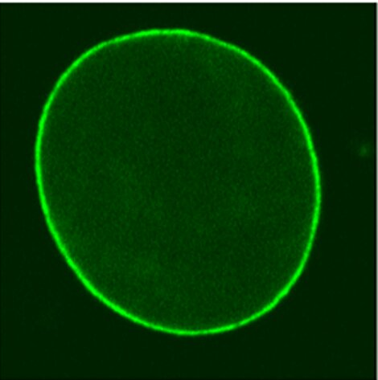
A normal human cell nucleus stained for lamin A: the lamina is a thin rim (confocal microscopy).
Two membranes; the outer one continues into the ER. Nuclear pores let ions and small molecules pass freely, so the nucleoplasm has the same pH and Ca²⁺ as the cytosol. Proteins go through pores with signals (the protein-sorting lecture).
The lamina: a mesh of lamin filaments (intermediate filaments) under the inner membrane. It gives the nucleus its shape and stiffness and holds chromatin.
Peroxisomes: small oxidation chambers
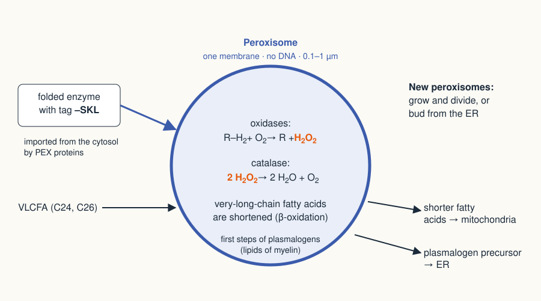
One membrane, no DNA, 0.1–1 µm; hundreds per liver cell.
Import folded enzymes from the cytosol; most carry the tag SKL (Ser-Lys-Leu) at the end (the protein-sorting lecture).
Oxidases use O₂ and make H₂O₂; catalase destroys it at once. Keeping this dangerous chemistry in one box protects the rest of the cell.
Jobs: shorten very-long-chain fatty acids, start plasmalogens (myelin lipids), and, in liver, bile acids.
Lipid droplets: the cell’s fat store
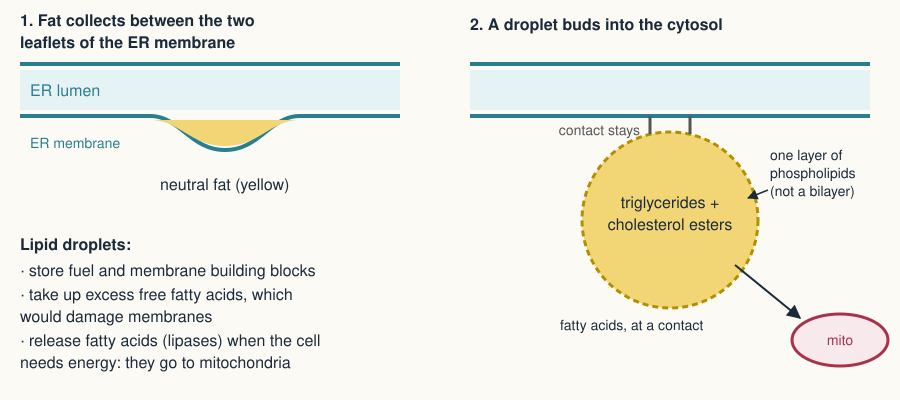
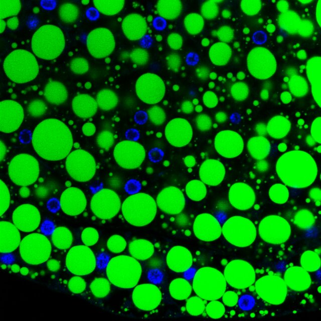
Fat cells (adipocytes) in culture: lipid droplets stained green with the dye BODIPY, nuclei blue.
Covered by one layer of phospholipids: the inside is oil, not water.
Size: 0.1 µm to over 100 µm (a fat cell is one huge droplet).
Organelles touch: contact sites
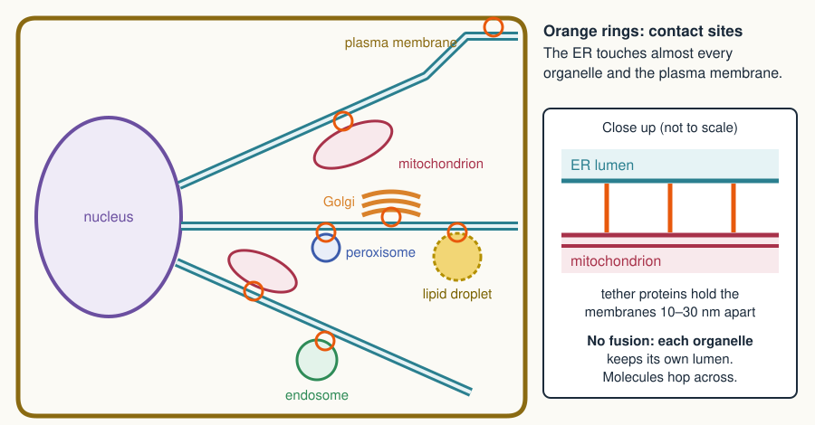
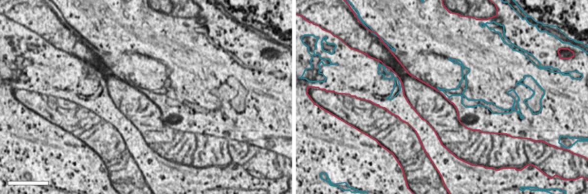
Mitochondria (red outlines; note the cristae) and ER (teal) in a HeLa cell, FIB-SEM. ER tubes run right along the mitochondria. Scale bar 500 nm.
At a contact site two membranes are held 10–30 nm apart by tether proteins, without fusing.
Most contacts involve the ER: it reaches every organelle and the plasma membrane.
What passes at contact sites: lipids and Ca²⁺
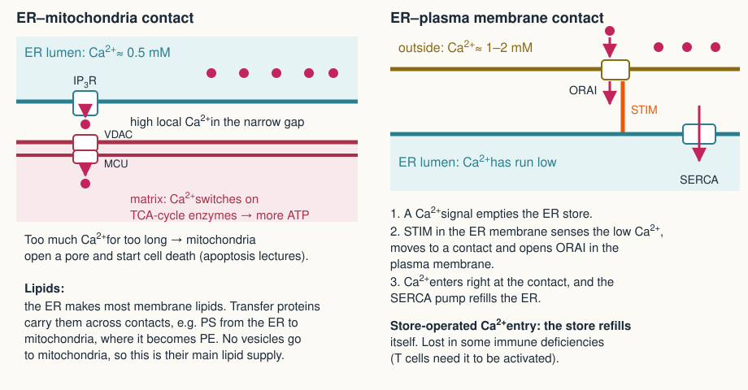
ER–mitochondria: Ca²⁺ released from the ER is taken up right away by mitochondria and speeds up ATP production. Too much triggers cell death. ER tubes also mark where mitochondria divide.
ER–plasma membrane: when the ER store runs low, STIM in the ER opens ORAI in the plasma membrane, and the store refills.
Homeostasis: every compartment has set points
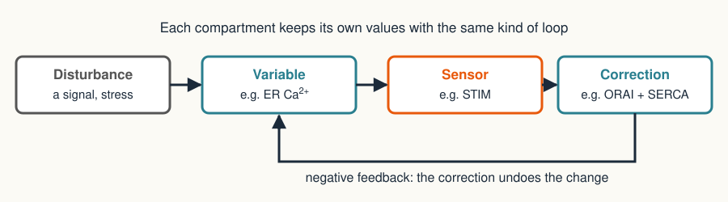
What is kept stable
Where
Sensor
Correction
pH
lysosome, Golgi
lumen pH (on the pump and its partners)
V-type H⁺ pump works more or less
Ca²⁺
ER store
STIM
ORAI opens, SERCA refills
Energy
whole cell
AMPK (AMP, ADP)
more fuel burning, less building
Protein load
ER
IRE1, PERK, ATF6
the unfolded protein response
pH: each compartment pumps its own protons
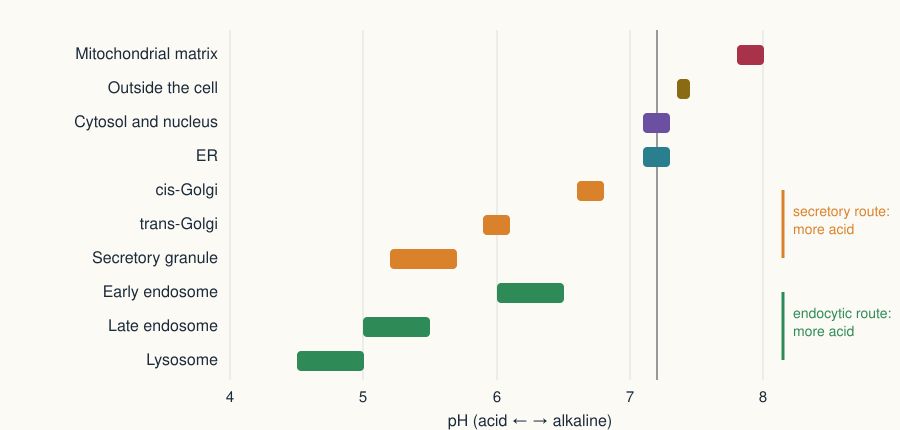
V-type H⁺-ATPase pumps H⁺ into Golgi, endosomes and lysosomes. More pumps and fewer leaks = lower pH. Cl⁻ entering with the H⁺ keeps the voltage low enough for the pump to continue.
Why acid? Receptors release their cargo (LDL, M6P enzymes); lysosomal enzymes work best at pH 4.5–5 and are almost inactive in the cytosol: a safety lock.
Mitochondria are the opposite: the electron transport chain pumps H⁺ out of the matrix (pH ≈ 8).
Ca²⁺: kept low in the cytosol, stored in the ER
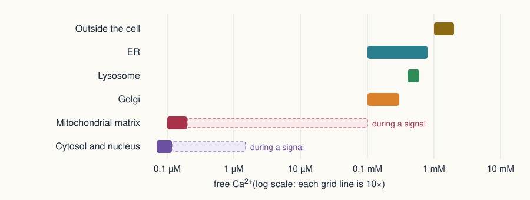
Pumps keep the cytosol at about 0.1 µM: SERCA (into the ER), PMCA and Na⁺/Ca²⁺ exchange (out of the cell). Free Ca²⁺ outside and in the ER is 5 000–10 000 times higher.
Opening channels gives a fast, large signal; mitochondria take up Ca²⁺ during a signal and help shape it.
The ER needs its Ca²⁺ for folding: the chaperones calnexin and calreticulin bind Ca²⁺. Emptying the store causes ER stress.
Energy and lipids: organelles feed each other
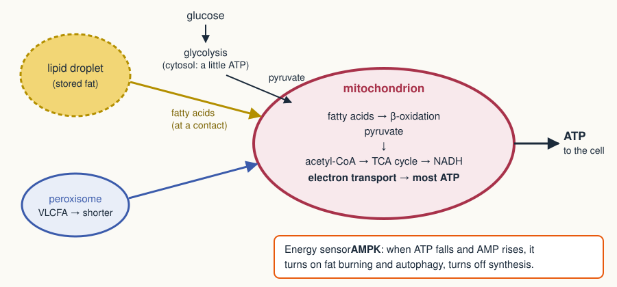
Fat is stored in lipid droplets, very long fatty acids are shortened in peroxisomes, and mitochondria burn the rest. Most ATP comes from mitochondria (the mitochondria lecture).
The sensor AMPK watches the energy charge: little ATP, much AMP → it switches on fuel use and autophagy, and switches off building (lipids, proteins).
Protein load: the unfolded protein response as a feedback loop
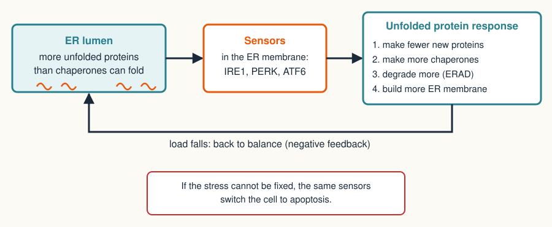
A plasma cell makes thousands of antibody molecules per second; a β cell makes insulin in bursts. The ER must match its folding capacity to the load.
Recap from the ER lecture: three sensors start the UPR. Here the point is the logic: a negative feedback loop, with cell death as the way out when it fails.
How do we know? Measuring organelles
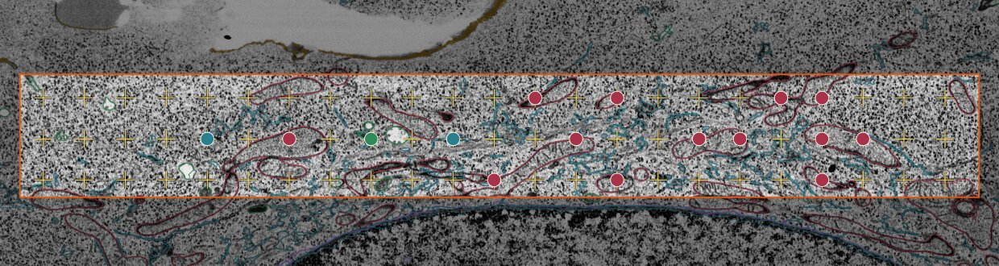
How much of the cell is mitochondria? Put a grid of points on EM sections and count the points that fall on each organelle (stereology). Points on mitochondria ÷ all points = area fraction, and on random sections area fraction = volume fraction. Many sections, many cells. Try it:Demo: measure the organelles.
What is the pH or Ca²⁺ inside? Fluorescent sensor proteins with a sorting signal: a pH-sensitive GFP, or a Ca²⁺ sensor sent to the ER or the mitochondrial matrix. The colour or brightness reports the value in that compartment only.
Organelles compared
Compartment
Membranes
Own DNA
How proteins get in
Main job
pH
Free Ca²⁺
Cytosol
–
–
made here (free ribosomes)
metabolism, signalling, protein synthesis
7.2
0.1 µM
Nucleus
2 (envelope) + lamina
yes (genome)
through pores (nuclear signal)
store and read DNA, make ribosomes
7.2
0.1 µM
ER
1
–
during translation (signal peptide)
fold membrane and secreted proteins, lipids, Ca²⁺ store
7.2
0.1–0.8 mM
Golgi
1
–
vesicles from the ER
modify (sugars) and sort
6.7 → 6.0
0.1–0.3 mM
Endosomes, lysosomes
1
–
vesicles (M6P tag for enzymes)
sort uptake, digest
6.5 → 4.5
lysosome ≈ 0.5 mM
Mitochondria
2
yes (37 genes)
after translation (presequence, TOM/TIM)
ATP, Ca²⁺ buffer, start apoptosis
matrix ≈ 8
0.1 µM at rest
Peroxisomes
1
–
after translation, folded (–SKL)
oxidise fatty acids, destroy H₂O₂
≈ 7–8
?
Lipid droplets
half (monolayer)
–
proteins insert from the ER or cytosol
store fat, buffer fatty acids
(no water)
(no water)
Typical values for a mammalian cell. Learn the pattern, not the decimals.
Why it matters: progeria and lonafarnib
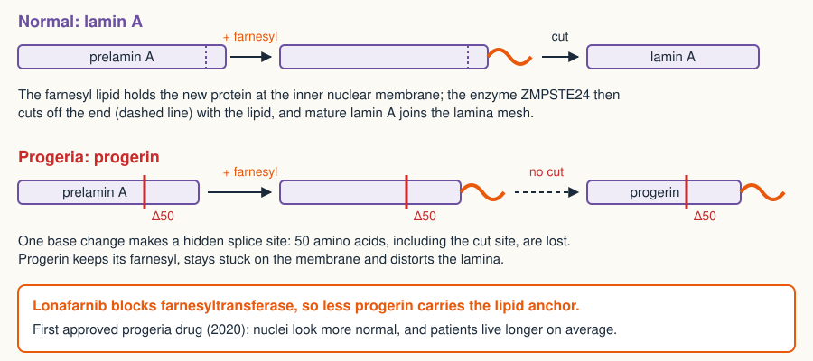
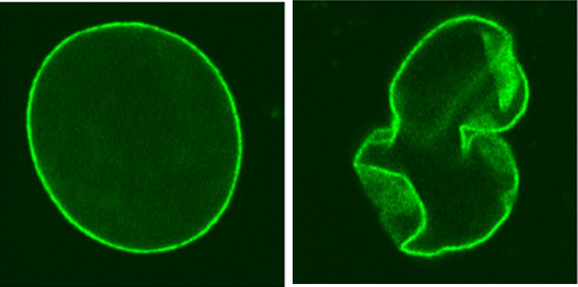
Nuclei stained for lamin A: a healthy cell (left) and a cell from a child with progeria (right), with a folded, blebbed envelope.
Hutchinson–Gilford progeria: about 1 in 4–8 million births. Children age fast and die in their teens, mostly of heart attack or stroke.
Why it matters: Zellweger syndrome, a cell without peroxisomes
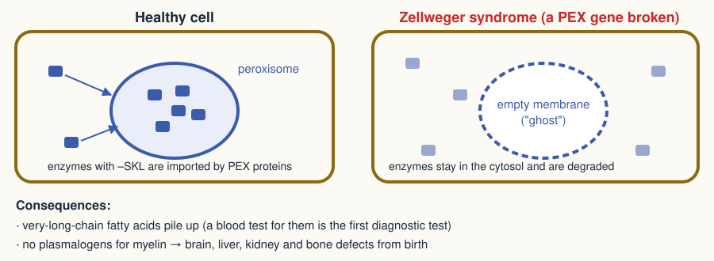
Caused by mutations in a PEX gene, which encodes the import machinery (PEX1 most often). About 1 in 50 000 births.
Without import, peroxisomes are empty “ghosts”. Very-long-chain fatty acids accumulate (blood test) and plasmalogens are missing.
Babies have weak muscle tone, seizures, liver disease; the severe form is fatal in the first year. No cure: treatment supports the child. You meet such diseases again in Sjukdomslära.
Summary
The nucleus has a double membrane continuous with the ER, pores that let small molecules pass, and a lamina of lamins that gives shape and holds chromatin. Peroxisomes (one membrane, imported folded enzymes) oxidise very long fatty acids and destroy H₂O₂. Lipid droplets store fat under a single phospholipid layer.
Organelles meet at contact sites (10–30 nm, no fusion), mostly with the ER: lipids and Ca²⁺ pass there (ER–mitochondria), and the ER store refills there (STIM–ORAI).
Each compartment keeps set points by negative feedback: pH by H⁺ pumps (lysosome 4.5–5, matrix ≈ 8), Ca²⁺ by pumps and channels (cytosol 0.1 µM, ER ~0.5 mM), energy via AMPK, protein load via the UPR.
Compare organelles by membranes, DNA, protein entry, job, pH and Ca²⁺. Stereology measures their size; targeted sensors measure their chemistry.
One broken part of one organelle causes systemic disease: progerin in progeria (lonafarnib), PEX genes in Zellweger syndrome.
Read more (optional): Alberts et al., Molecular Biology of the Cell, 7th ed., ch. 12 and 14.